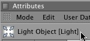
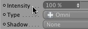
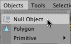
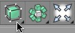
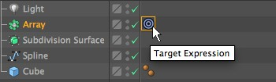
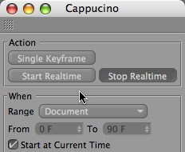

帮助功能


新的帮助功能是目录关联的，包含关于 CINEMA 4D 的所有参考信息，替代了以前打印的或 PDF 格式的文档。
新的帮助功能提供了简单的目录导航和多重搜索功能。目录关联意味着你可以直接从你需要帮助的地方跳转到帮助文档中对应的页面。
没有包含在你的版本中的组件是灰色的，文档会根据软件包含的版本来显示信息。
手动获取帮助
通过主菜单中的帮助 / 显示帮助....
与其他 CINEMA 4D 管理器窗口一样，帮助窗口也能停靠在界面中的任何地方。
历史记录
使用历史记录箭头在帮助页面之间前进或后退，点击主页图标会回到帮助开始页面。
在历史记录箭头上右击会显示最近访问的页面列表。
你现在可以通过页面按钮来后退或前进。
目录
目录包含整个 CINEMA 4D 相关的帮助。
帮助文档包含所有 BodyPaint 3D、CINEMA 4D Prime、Studio、Visualize 和 Broadcast 相关的文档。
你可以使用方向键在目录菜单上快速导航。上和下箭头键能在菜单中上下导航，按右方向键能打开一个关闭的目录，按左方向键可以关闭一个打开的目录。
搜索
Text entered here will be searched for throughout the entire help. All pages containing the search text will be listed.
If several search terms are entered only those pages containing all terms will be listed.
The Details slider lets you define the degree of detail with which the search should be conducted, i.e., if only basic information should be included (e.g., what is a material? or if headlines, object names, menu names or individual settings in the Attributes Manager should also be included.
The final search function is the full text search (slider at far right).

Use Detail to fine-tune your search.
全文搜索
When the slider is moved all the way to the right the search will be conducted within the entire help text. If more than one word is entered into the Search field an AND-logic search will be conducted, i.e., only those pages containing all words entered will be displayed.
The following will occur when a text search is conducted:
- Entering the word time will also display results for timeline.
- If the word you enter also offers possible prefixes, a * must be entered prior to the word, e.g., *able will also display results for disable and disabled, etc.
In addition, the text that was searched for will appear with a different color so it can be spotted quickly.
从帮助文件直接加载场景
You will find the following icons within the text, especially in the Tutorial section:
{kind=link}
A simple click on the image will load the respective file.
Browser Pop-Ups
Right-clicking anywhere in the Help window will display a list of options (e.g., Print, Reload). These options may vary depending on the operating system being used.
Print the current page
Content-Based Access
The Help documentation can be opened from the GUI using a hotkey (default is set to Cmd+F1 (Mac) or Ctrl+F1 (PC)).
- Attribute Manager

- Menu

- Icons

- Object Manager

The corresponding help text will be displayed when the cursor is placed over an object or tag.

If the context-senstive jump does does not work, please use the Search function.
Copying Textblocks
Text highlighted using the mouse can be copied to the clipboard by right-clicking on the text and selecting the Copy command.
Bookmarks
Several bookmarking options are available in the help window’s main Bookmark menu. These options can be used to create, call up or delete bookmarks.
Bookmarks will be saved to the prefs folder in your user directory.
Use this command to bookmark the currently opened help page. Alternately you can right-click on an entry and select Add Bookmark from the menu.
Selecting this option will open a dialog window in which all bookmarks are displayed. The bookmarks in the list can be selected and deleted using the del-key. All bookmarks will also be displayed in the Bookmark drop-down menu.
Lists all existing bookmarks. Select a bookmark to go to the page.